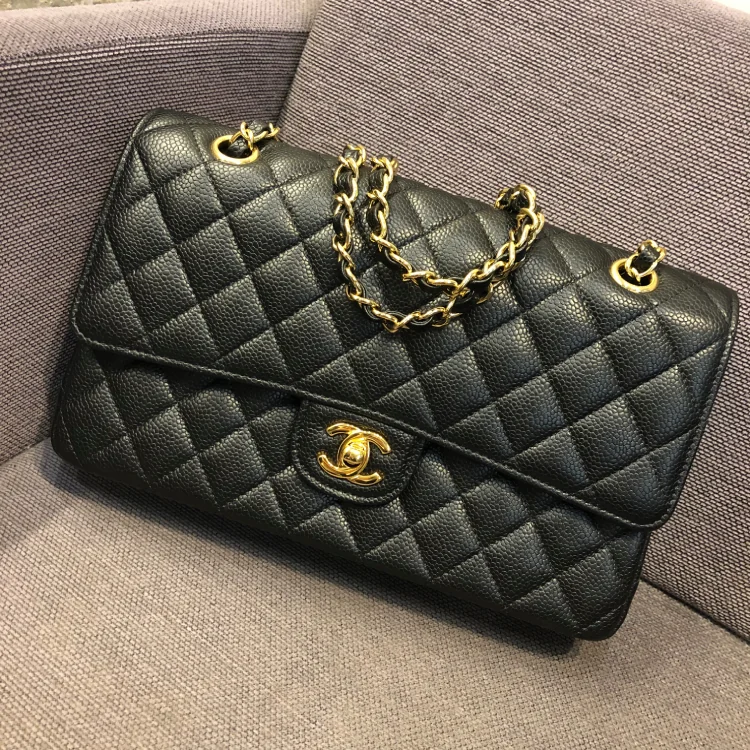

相場トラッカーでわかること
相場トラッカーは、ブランド品を売る前に「いまどのくらいで売れているのか」「定価と比べてどうなのか」を確かめるためのページです。当社の2店舗で成立した買取実績と、ブランドの現行定価の推移を、モデルごとにまとめています。
各モデルのページでは、状態ランクや付属品の有無で絞り込める実績表、定価推移と買取実績を重ねた折れ線グラフ、状態ランク別のグラフを表示します。元データはCSVでダウンロードできるため、ご自身で比較・保存することも可能です。
掲載している数値は過去の成立実績であり、将来の買取価格を約束するものではありません。実際の査定額は、個体の状態や付属品、査定時点の市況によって変わります。
掲載モデル一覧
現在トラッキングしているモデルは次のとおりです。カードを選ぶと、モデル別の相場ページに移動します。
 エルメスバーキン30買取中央値267万円
エルメスバーキン30買取中央値267万円 エルメスケリー28買取中央値261万円
エルメスケリー28買取中央値261万円
シャネルマトラッセ25 ダブルフラップ チェーンショルダー買取中央値84.0万円 ロレックスコスモグラフ デイトナ 126500LN買取中央値350万円
ロレックスコスモグラフ デイトナ 126500LN買取中央値350万円 ロレックスサブマリーナー デイト 126610LN買取中央値157万円
ロレックスサブマリーナー デイト 126610LN買取中央値157万円 カルティエラブブレス（クラシック）買取中央値65.0万円
カルティエラブブレス（クラシック）買取中央値65.0万円
ブランドごとの査定ポイントは、エルメスの買取ガイド、シャネルの買取ガイド、ロレックスの買取ガイド、カルティエの買取ガイドでも解説しています。
数値の見方：中央値・状態ランク・付属品区分
相場ページの数値を読み解くには、いくつかの用語を押さえておくと便利です。ここでは各ページ共通の定義をまとめます。
なぜ「平均」ではなく「中央値」なのか
中央値とは、集計期間の買取実績を金額順に並べたときに、ちょうど真ん中に位置する値のことです。未使用に近い個体や、希少な素材・カラーの個体が1件混ざるだけで、平均値は大きく引き上げられてしまいます。
中央値はそうした極端な実績の影響を受けにくいため、「標準的な個体がどのくらいで売れているか」の目安として使っています。あわせて件数も表示しているので、件数が少ないモデルは参考程度にご覧ください。
状態ランク（S／A／AB／B／C）
状態ランクは、査定時に鑑定担当が外観・内装・金具・機能を確認して付けた評価です。ブランドやアイテムの種類をまたいで、次の基準で統一しています。
| ランク | 目安 | よくある状態の例 |
|---|---|---|
| S | 未使用または未使用に近い | 保護シールが残っている、使用感がほとんど見られない |
| A | 使用感が少ない美品 | 数回の使用程度で、目立つ傷や型崩れがない |
| AB | 使用感はあるが良好 | 角や金具に小さなスレ、細かな小傷がある |
| B | 全体に使用感がある | 角スレ・型崩れ・内装の汚れ・研磨を要する傷がある |
| C | 難あり | 破れ、強い変色、パーツ欠損、動作不良などがある |
付属品区分（完品／一部欠品／本体のみ）
付属品は査定額に影響しやすい要素のため、実績を3つの区分に分けて記録しています。区分の考え方は次のとおりです。
| 区分 | 内容 |
|---|---|
| 完品 | 購入時の箱・保存袋・保証書（ギャランティカード）・レシートなど、主要な付属品がそろっている |
| 一部欠品 | 主要な付属品のうち、いずれかが欠けている（例：箱はあるが保証書がない） |
| 本体のみ | 付属品がなく本体だけで査定したもの |
買取率（買取中央値÷現行定価）
買取率は、集計期間の買取中央値を、その時点の国内現行定価で割った割合です。「定価に対してどのくらいの水準で売れているか」を示す指標で、モデル同士の人気の傾向を比べる手がかりになります。
ブランドが価格改定を行うと分母の定価が変わるため、買取額が同じでも買取率は動きます。グラフでは定価推移と買取実績を重ねて表示しているので、あわせてご確認ください。
ポイント
買取率が高いモデルほど「中古市場でも需要が続いている」と読み取れますが、個体差は大きいです。ご自身の品物に近い状態ランク・付属品区分で表を絞り込んで見るのがおすすめです。
データはどこから来ているのか
買取実績は、当社の〇〇〇〇A 心斎橋店と〇〇〇〇Bで成立した取引をもとに、個人が特定されない形に加工して掲載しています。定価は各ブランド公式サイトの掲載価格を確認し、確認日とともに記録しています。
集計対象・除外条件・加工方法の詳細は、当サイトの運営方針「価格データの扱い」にまとめています。当社2店舗の情報は店舗一覧からご覧いただけます。

更新頻度はどのくらい？
相場トラッカーは、最低月1回の定期更新を行っています。加えて、ブランドが国内定価を改定した場合は、改定を確認した時点で定価推移表とグラフを臨時更新します。
各モデルのページには最終更新日を表示しています。売却を検討する際は、更新日の新しさも判断材料にしてください。
ご注意
掲載の実績は過去の取引であり、同じ条件でも査定時期によって金額は変わります。正確な金額は、店頭・宅配・LINEでの査定でご確認ください。
相場トラッカーの上手な使い方
- 品物の状態ランクを見積もる上の定義表を参考に、角スレや傷、金具の状態から近いランクを想定します。
- 付属品をそろえて区分を確認する箱・保存袋・保証書などを手元で確認し、完品か一部欠品かを把握します。
- モデルページの表を絞り込む状態ランクと付属品区分で絞り込み、近い条件の実績を確認します。
- 当店の査定で実際の金額を確かめる相場はあくまで目安です。実物を拝見した査定額で最終的にご判断ください。
売るか質預かりにするか迷う場合は、質預かりと売却の違いも参考にしてください。当社2店舗の違いはどちらの店舗を選ぶかでご案内しています。